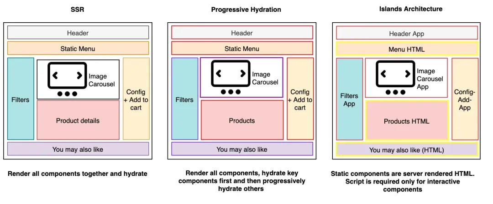

作为一名老程序员，我见证了前端技术的飞速发展。从 jQuery 到 React、Vue，再到现在的各种 SSR 框架，前端的复杂度就像坐火箭一样蹭蹭往上涨。虽然功能越来越强大，但项目也越来越“重”。
以前，为了一个简单的展示页面，我们可能需要引入大量的 JavaScript 代码，导致页面加载缓慢，用户体验极差。特别是对于内容型网站，这种“重”更是雪上加霜。
是不是觉得很熟悉？是不是感觉前端已经变成了“重灾区”？
那么，有没有一种工具，能像 PHP 一样，简单高效地生成 HTML，同时又能享受到现代前端开发的便利呢？
答案是肯定的，那就是 Astro。
你可能要问了，Astro 是什么？简单来说，Astro 是一个专注于内容型网站的 Web 框架，它采用了“多页面应用”（MPA）的架构，并结合了“岛屿架构”（Island Architecture），让你的网站既能拥有静态网站的超高性能，又能灵活地添加动态交互。
啥？“岛屿架构”听起来有点高大上？别怕，其实它很通俗易懂。我们可以把页面想象成一片海，其中静态内容就是海面，而那些需要动态交互的部分就像一个个小岛，只在需要的时候才会被“激活”。
这种架构有什么好处呢？那就是最大程度地减少了客户端 JavaScript 的负担，让页面加载速度更快，用户体验更好！是不是有点像 PHP 时代，服务端渲染 HTML 的感觉？
说了这么多，不如来点实际的。我们用 Astro 搭建一个简单的博客，感受一下它的魅力。
npm create astro@latest my-blog
cd my-blog
npm install
npm run dev
现在，你就可以在浏览器中看到 Astro 的欢迎页面了！
src/pages 目录下创建一个新的文件，例如my-first-post.astro，并添加以下内容：---
layout: ../layouts/BlogPost.astro
title: 我的第一篇文章
---
<p>这是我的第一篇 Astro 博客文章。</p>
<button>点击我</button>
<script>
document.querySelector("button").addEventListener("click", () => {
alert("你点击了我！");
});
</script>
注意，这里我们定义了一个简单的按钮，并且添加了点击事件，这部分的 JS 代码会像“岛屿”一样被加载到页面上。
src/layouts/BlogPost.astro：---
const { title } = Astro.props;
---
<!DOCTYPE html>
<html lang="en">
<head>
<meta charset="UTF-8" />
<meta name="viewport" content="width=device-width" />
<title>{title}</title>
</head>
<body>
<slot />
</body>
</html>
这是一个简单的 HTML 布局，slot 标签表示文章内容会插入到这里。
http://localhost:4321/my-first-post，你就可以看到你的第一篇博客文章了。是不是很简单？你甚至都不需要学习新的语法，直接用 HTML 就可以构建页面了。
Astro 的出现，无疑给前端开发带来了一股清流。它用最简单的方式，解决了前端开发中最大的痛点——性能。
以前，我们可能需要花费大量时间优化前端代码，才能勉强达到可接受的性能。而现在，使用 Astro，我们几乎不需要做任何优化，就能获得超高的性能。这简直太棒了！
所以，如果你也厌倦了复杂的框架，也渴望更轻量、更高效的开发方式，那么不妨试试 Astro 吧。它绝对不会让你失望！